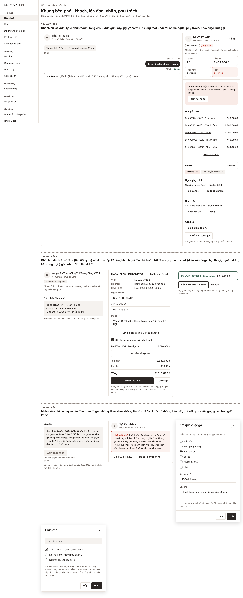
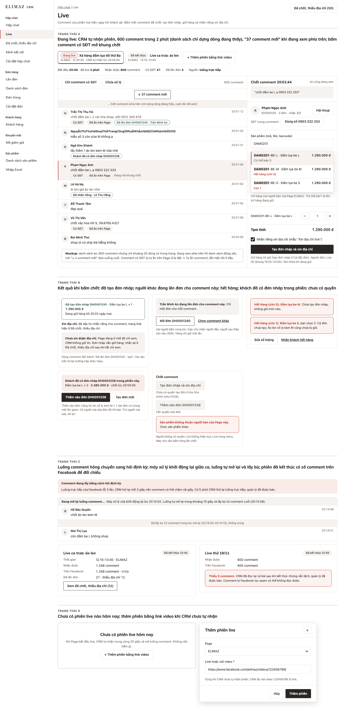
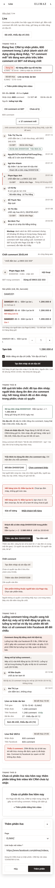
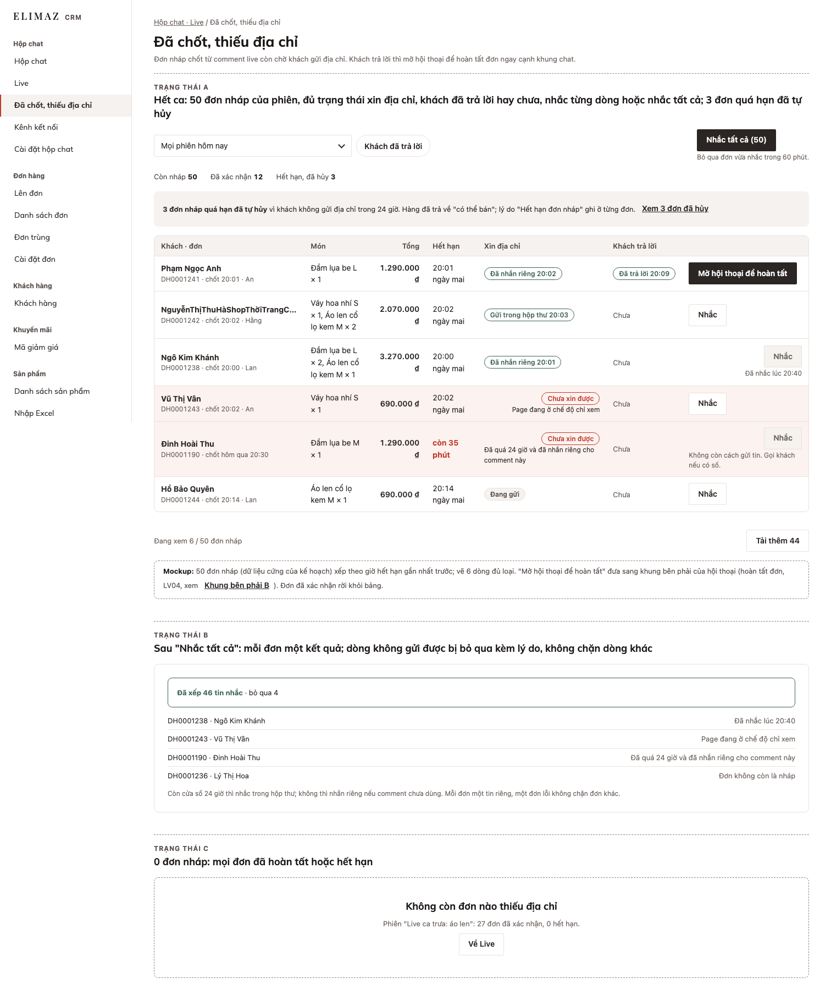
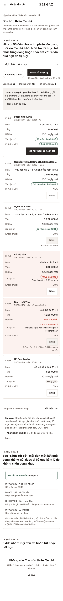
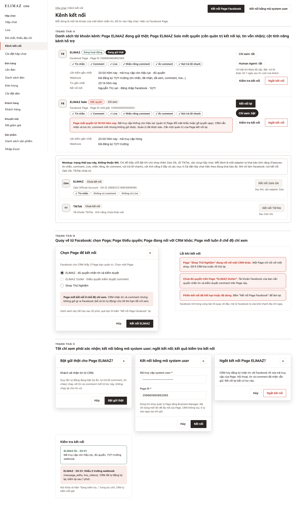
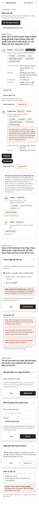
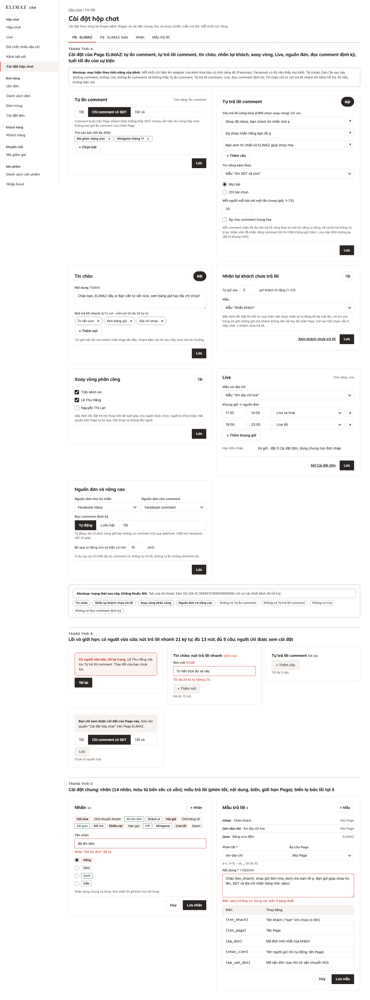
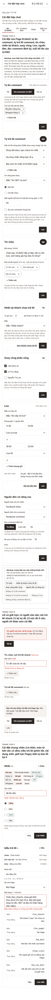

CRM ELIMAZ · M4 · TASK M4-01 (141) · 20/11/2026 · TASK M4-02 (142) · 25/11/2026
Mockup M4: Inbox, Hội thoại, Khung bên phải, Live, Thiếu địa chỉ, Kênh kết nối, Cài đặt
Đề xuất cho ba phần của Hộp chat thay Vpage, vẽ bằng đúng hệ thiết kế đã duyệt ở M1 (docs/mockups/m1/m1.css) và thành phần M2: chỉ màu, cỡ chữ, bo góc có sẵn; không có gì chỉ hiện khi rê chuột; nút trên điện thoại cao ít nhất 44 px. Mỗi màn có nhiều trạng thái xếp dọc (khung viền đứt là ghi chú của mockup).
Đọc trang này thế nào
- Hiện tại: shop trả lời khách trên Vpage (hai Page). CRM không đọc dữ liệu Vpage nên không có ảnh chụp; cột "Hiện tại" ghi theo spec 01, 02, "chưa khảo sát" khi chưa biết.
- Đề xuất: ảnh 1512 × 767 (laptop của chủ shop), 390 × 844 và 360 × 800 (điện thoại). Bấm ảnh để xem cả trang.
- Ảnh và tự soát sinh lại bằng
docs/mockups/m4/soat.mjs. - Kênh kết nối, Cài đặt vẽ trung lập với kênh: sau này thêm Zalo OA rồi TikTok vào cùng hộp chat. M4 chỉ làm Facebook; Zalo OA, TikTok chỉ nằm trong khung viền đứt "Mockup: trạng thái sau này".
(1) Hộp chat (Inbox) /inbox
Mở mockupTrạng thái: A danh sách đủ loại (tin mới nhảy lên đầu, comment kèm tên bài, tên 60 ký tự, 120 và 9 chưa đọc, 14 nhãn, người lạ lần đầu, 200 hội thoại, cột Page, bộ lọc) · B mất kết nối đang nối lại, lọc "Của tôi" + chưa đọc còn 1 hội thoại không nhãn, tìm "5678" · C 0 hội thoại, 0 chưa đọc, Page chỉ xem, Page mất kết nối · D khách chưa trả lời, gửi mẫu một chạm. Ca kiểm: CH01, CH02, CH06, CH07, CH08, CH16.


(2) Hội thoại /inbox/:conversationId
Mở mockupTrạng thái: A tin nhắn đủ loại (lịch sử trước CRM, hệ thống, tin chào tự động, nhân viên, ngoài CRM, ghi chú nội bộ, ảnh dọc cao, tệp tên dài, đang gửi ảnh), "An đang xem", ô gõ còn giờ · B sáu trạng thái gửi, "An đang trả lời" · C comment (nút "Nhận" khi chưa ai nhận, thẻ bài, trả lời công khai, nhắn riêng khóa sau một tin và khi quá 7 ngày, tự trả lời một lần, bị ẩn, khách sửa, khách xóa, 2.000 ký tự) · D ô gõ hết 24 giờ, Human Agent, Page chỉ xem, menu "/". Ca kiểm: CH01–CH14, CH18, CH19.


(3) Khung bên phải cột phải của /inbox/:conversationId
Mở mockupTrạng thái: A khách cũ (số đơn, tỷ lệ nhận/hoàn, tổng chi, 5 đơn gần đây, có thể cùng một khách, một hồ sơ cho tin và comment), nhãn, người phụ trách, nhắc việc, nút gọi · B khách mới chưa có đơn (tên 60 ký tự), đơn nháp từ Live, hoàn tất đơn cạnh chat, gợi ý gắn nhãn "Đã lên đơn" · C chỉ có quyền lên đơn theo Page (Task 411), khách không liên hệ, kết quả cuộc gọi, giao cho. Ca kiểm: DH03, LV04, CH06, CH07, CH08, CH15, CH17.




(4) Live /live (đề xuất, Task M4-37)
Mở mockupTrạng thái: A đang live: chọn phiên (đang live, đã kết thúc, thêm tay), số liệu phiên, 600 comment danh sách ảo, "37 comment mới", lọc có SĐT / chưa xử lý, dòng đã lên đơn / đã nhắn riêng / có đơn nháp, khung chốt (thẻ khách, tìm sản phẩm có "có thể bán", số lượng, "Tạo đơn nháp và xin địa chỉ") · B kết quả chốt, "An đang lên đơn", hết hàng, khách đã có đơn nháp, chưa có quyền · C hỏi định kỳ, khởi động lại lấy bù, phiên kết thúc khớp / lệch số comment · D chưa có phiên, thêm phiên bằng link. Ca kiểm: LV01, LV02, LV03, LV07, LV08, LV09, LV10.





(5) Đã chốt, thiếu địa chỉ /live/thieu-dia-chi (đề xuất, Task M4-37)
Mở mockupTrạng thái: A 50 đơn nháp, trạng thái xin địa chỉ (đã nhắn riêng, gửi trong hộp thư, chưa xin được kèm lý do), khách đã trả lời, Nhắc / Nhắc tất cả, mở hội thoại, nháp quá hạn đã hủy · B kết quả Nhắc tất cả · C 0 đơn nháp. Ca kiểm: LV04, LV05, LV06.





(6) Kênh kết nối /settings/channels (Task M4-38)
Mở mockupTrạng thái: A tài khoản kênh (biểu tượng, tên, Page ID, tính năng kênh, trạng thái, chế độ, lần kiểm, webhook, chỉ xem, Human Agent, kiểm tra, ngắt), Page mất quyền; khung "sau này" Zalo OA, TikTok · B chọn Page sau Facebook, Page thiếu quyền, nối nơi khác, Page mới chỉ xem · C xác nhận tắt chỉ xem, mã system user, ngắt kết nối, kết quả kiểm tra. Ca kiểm: HT15.





(7) Cài đặt hộp chat /settings/inbox (đề xuất, Task M4-38)
Mở mockupTrạng thái: A theo tài khoản kênh: tự ẩn (ba chế độ, ngoại lệ bài), tự trả lời comment (≤ 5 câu, tin riêng, giới hạn mỗi người, live), tin chào (≤ 13 nút, 20 ký tự), nhắn lại, xoay vòng, Live (mẫu, khung giờ → nguồn đơn, hạn nháp ở M2), nguồn đơn, đọc định kỳ, tuổi sự kiện; ghi chú ẩn khối theo tính năng kênh · B có người vừa sửa, 21 ký tự, 13 nút, 5 câu, chỉ xem · C nhãn, mẫu trả lời, bảng biến, biến lạ. Ca kiểm: CH11, CH12, CH16.





Ca kiểm → màn, trạng thái
| Ca | Nội dung (spec 11) | Vẽ ở |
|---|---|---|
| CH01 | Khách nhắn: tin hiện ngay, hội thoại lên đầu, tăng chưa đọc | Inbox A (dòng nền hồng); Hội thoại A (tin vào) |
| CH02 | Comment vào cùng hộp chat, ghi rõ thuộc bài nào | Inbox A (chữ "Comment" + tên bài); Hội thoại C (thẻ bài viết) |
| CH03 | Trả lời: "đang gửi" rồi "đã gửi" | Hội thoại A, B |
| CH04 | Gửi ảnh cho khách | Hội thoại A (ảnh đang tải lên, đang gửi) |
| CH05 | Trả lời comment và nhắn riêng; nút nhắn riêng khóa sau một tin | Hội thoại C |
| CH06 | Tự nhận hoặc được giao; thấy ở "Của tôi" | Inbox A, B (lọc "Của tôi"); Hội thoại C (nút "Nhận" ở hội thoại chưa ai nhận); Khung bên phải A (Giao cho…, Trả lại), C (hộp Giao cho) |
| CH07 | Nhãn, mẫu trả lời, ghi chú nội bộ (không gửi ra ngoài) | Inbox A (lọc nhãn); Hội thoại A (ghi chú), D (menu "/"); Khung bên phải A (nhãn) |
| CH08 | Người lạ lần đầu: tự tạo hồ sơ khách tiềm năng | Inbox A (chip "Khách tiềm năng mới"); Hội thoại A (tin hệ thống); Khung bên phải B |
| CH09 | Quá 24 giờ: ô gõ khóa, ghi lý do và hạn | Hội thoại D (hết 24 giờ) |
| CH10 | Hai người cùng mở: "An đang xem"/"An đang trả lời" | Hội thoại A, B |
| CH11 | Tự ẩn comment có SĐT: ẩn trên Page, vẫn hiện trong CRM | Hội thoại C; Cài đặt A (Tự ẩn comment); Live A (chip "Đã ẩn trên Page") |
| CH12 | Tự trả lời comment, tin chào: mỗi comment một tin tự động | Hội thoại A (tin chào), C (tự trả lời + tự nhắn riêng); Cài đặt A (Tự trả lời comment, Tin chào), B (giới hạn) |
| CH13 | Khách sửa/xóa comment: CRM cập nhật, giữ lịch sử | Hội thoại C |
| CH14 | Nhân viên trả lời bằng ứng dụng Meta: tin vẫn hiện | Hội thoại A ("Gửi từ ứng dụng Meta (ngoài CRM)") |
| CH15 | Vừa nhắn vừa comment: một hồ sơ khách | Khung bên phải A (dòng "Một hồ sơ gắn với tài khoản Facebook này qua cả tin nhắn và comment") |
| CH16 | Khách chưa trả lời: gửi mẫu một chạm; tự gửi một bước nếu bật | Inbox D; Cài đặt A (Nhắn lại khách chưa trả lời) |
| CH17 | Ghi kết quả cuộc gọi vào hồ sơ và hội thoại | Khung bên phải A (nút), C (hộp kết quả) |
| CH18 | Mạng rớt khi gửi: "không rõ đã gửi chưa", không tự gửi lại | Hội thoại B |
| CH19 | Quá 3 phút chưa đi: "chưa gửi được", gửi lại hoặc bỏ | Hội thoại B |
| LV01 | Ca live bắt đầu: CRM tự nhận phiên, mở luồng comment | Live A (phiên "CRM tự nhận lúc 20:00:04") |
| LV02 | Vài trăm comment mỗi phút: màn mượt, đủ số | Live A (600 comment, danh sách ảo, "37 comment mới"), C (số trên Facebook) |
| LV03 | Bấm comment chốt: đơn nháp, giữ hàng, nhắn riêng xin địa chỉ | Live A (khung chốt), B (kết quả chốt) |
| LV04 | Khách gửi địa chỉ: hoàn tất đơn cạnh chat, đơn "Đã xác nhận" | Khung bên phải B; Thiếu địa chỉ A ("Mở hội thoại để hoàn tất") |
| LV05 | Hết ca: danh sách đã chốt thiếu địa chỉ, nhắc một chạm | Thiếu địa chỉ A, B |
| LV06 | Nháp quá hạn: hủy, trả hàng, ghi lý do | Thiếu địa chỉ A (hộp "3 đơn nháp quá hạn đã tự hủy") |
| LV07 | Hai nhân viên cùng bấm: một đơn, người sau thấy "An đang lên đơn" | Live A (dòng "Đã lên đơn … · Trần Minh An"), B |
| LV08 | Chốt món hết hàng: báo ngay, không tạo nháp | Live A (gợi ý "Hết hàng (còn 0)"), B |
| LV09 | Một khách chốt nhiều lần: gợi ý đơn nháp đang có | Live A (chip "Khách đã có đơn nháp"), B |
| LV10 | Máy xử lý khởi động lại giữa ca: luồng mở lại, lấy bù | Live C |
| DH03 | Khung khách cạnh chat: lịch sử mua, tỷ lệ nhận và hoàn | Khung bên phải A |
| HT15 | Page mất quyền: cảnh báo, kết nối lại, tin không mất | Kênh kết nối A (dòng ELIMAZ Sale "Mất quyền", nút "Kết nối lại") |
Thay đổi hành vi so với công cụ cũ (55 dòng)
Mỗi dòng cần chủ shop OK riêng| # | Màn | Hành vi đề xuất | Hiện tại | Chủ shop OK |
|---|---|---|---|---|
| HV01 | Khung | Menu thêm nhóm "Hộp chat" đứng đầu, trước Đơn hàng. | Vpage là công cụ riêng, ngoài CRM. | chưa |
| HV02 | Khung | Máy tính: ba cột (danh sách 340 px, hội thoại, khung khách 360 px). Điện thoại: mỗi lúc một màn (danh sách → hội thoại → "Khách"), nút "‹" quay lại. | Vpage: chưa khảo sát bố cục. | chưa |
| HV03 | Inbox | Chọn Page là danh sách trên đầu cột hội thoại (không phải cột riêng), mỗi Page có số chưa đọc; trên 99 hiện "99+". | Vpage có chọn Page; chưa khảo sát. | chưa |
| HV04 | Inbox | Tin mới: hội thoại nhảy lên đầu, nền hồng 5 giây, tăng số chưa đọc (như đơn vừa đổi ở M2). Không có âm báo. | Chưa khảo sát. | chưa |
| HV05 | Inbox | Dòng hội thoại: nhãn tối đa 3 rồi "+n"; comment ghi "Comment" và tên bài; người phụ trách ở cuối dòng ("Của tôi", "Chưa ai nhận", tên). | Vpage có 14 nhãn chung. | chưa |
| HV06 | Inbox | Bộ lọc mặc định: Đang mở, Mọi người, Mọi nhãn, Tin và comment; hai nút bật/tắt "Chỉ chưa đọc", "Khách chưa trả lời"; "Tải thêm 50" thay số trang. | Chưa khảo sát. | chưa |
| HV07 | Inbox | Mất kết nối cập nhật tự động: băng "Mất kết nối, đang nối lại", danh sách tự tải lại mỗi 20 giây, nút "Tải lại ngay". | — | chưa |
| HV08 | Inbox | Page chỉ xem và Page mất kết nối báo bằng băng trên đầu danh sách và chip cạnh tên Page. | — | chưa |
| HV09 | Inbox | "Khách chưa trả lời": chọn số giờ im lặng (mặc định 3) và mẫu; mỗi dòng một nút "Gửi mẫu" gửi ngay, dòng chuyển "Đã gửi". Không hiện khách quá 24 giờ, khách không liên hệ, khách đã chặn Page. | Nhắn lại tay trên Vpage; chưa khảo sát. | chưa |
| HV10 | Hội thoại | Tin lịch sử lấy từ Facebook (trước khi kết nối CRM) hiện nhạt, viền đứt, có chữ "trước khi kết nối CRM"; không tính chưa đọc. | — | chưa |
| HV11 | Hội thoại | Tin tự động: bong bóng viền, chữ "Tin tự động" và tên quy tắc. Tin gửi từ ứng dụng Meta: bong bóng xám đậm, "Gửi từ ứng dụng Meta (ngoài CRM)", không biết người gửi. Tin nhân viên ghi tên người gửi. | — | chưa |
| HV12 | Hội thoại | Ghi chú nội bộ là tab "Ghi chú nội bộ" của ô gõ; bong bóng nền hồng viền đứt, chữ "Chỉ nhân viên thấy", không bao giờ gửi cho khách. | Chưa khảo sát Vpage có ghi chú không. | chưa |
| HV13 | Hội thoại | Ảnh cao tối đa 360 px, bấm xem cỡ thật; tệp không phải ảnh chỉ có nút "Tải về", không xem trước. | — | chưa |
| HV14 | Hội thoại | Trạng thái gửi hiện bằng chữ dưới tin. "Không rõ đã gửi chưa" và "Chưa gửi được" có hai nút Bỏ / Gửi lại cùng cỡ (Gửi lại không nổi bật vì khách có thể nhận hai lần); "Lỗi" kèm lý do tiếng Việt, không có nút gửi lại. | — | chưa |
| HV15 | Hội thoại | Ô gõ khóa (không ẩn) khi hết 24 giờ hoặc Page chỉ xem, kèm lý do và hạn; vẫn viết được ghi chú nội bộ; có nút "Gọi khách", "Nhắc tôi lúc…". | — | chưa |
| HV16 | Hội thoại | Page có thẻ Human Agent: sau 24 giờ nút gửi đổi chữ thành "Trả lời (nhân viên)", hiện hạn 7 ngày; đồng hồ còn lại luôn hiện, chữ đỏ ở chế độ này. | — | chưa |
| HV17 | Hội thoại | Enter xuống dòng; Ctrl/⌘ + Enter gửi. | Chưa khảo sát (Vpage có thể Enter gửi). | chưa |
| HV18 | Hội thoại | Gõ "/" mở danh sách mẫu ngay trên ô gõ; Enter chèn mẫu vào ô (điền sẵn biến) để sửa, không gửi luôn. | Vpage có mẫu trả lời; chưa khảo sát cách chèn. | chưa |
| HV19 | Hội thoại | Mỗi comment luôn có ba nút "Trả lời công khai", "Nhắn riêng", "Ẩn trên Page" (không chỉ khi rê chuột). Nhắn riêng mờ kèm lý do sau một tin hoặc khi comment quá 7 ngày. | — | chưa |
| HV20 | Hội thoại | Comment bị ẩn vẫn hiện đủ trong CRM, chip "Đã ẩn trên Page" kèm lý do (tự ẩn vì có SĐT) và nút "Hiện lại trên Page". | — | chưa |
| HV21 | Hội thoại | Comment khách sửa: chip "Khách đã sửa" và lịch sử sửa mở sẵn dưới comment. Khách xóa: bong bóng viền đứt "Khách đã xóa…" và giữ nội dung trước khi xóa. | — | chưa |
| HV22 | Hội thoại | Tin, comment dài hiện 8 dòng rồi nút "Xem hết (n ký tự)". | — | chưa |
| HV23 | Hội thoại | "An đang xem", "An đang trả lời…" là dải ngay dưới đầu hội thoại. | — | chưa |
| HV24 | Khung bên phải | Thẻ khách: 4 ô số (số đơn, tổng chi, nhận hàng, hoàn); ô hoàn tô đỏ khi khách có nhãn "Hay hoàn" của M2; 5 đơn gần đây có liên kết, "Xem cả n đơn". | Vpage không có lịch sử mua (Nhanh riêng). | chưa |
| HV25 | Khung bên phải | Khách có đơn nháp từ Live: khung lên đơn mở sẵn đơn nháp đó để hoàn tất; Page, hội thoại, nguồn đơn điền sẵn, không sửa ở đây. | Chốt Live trên công cụ cũ: chưa khảo sát. | chưa |
| HV26 | Khung bên phải | Nút "Lấy địa chỉ từ tin 09:14 của khách" chép nguyên văn tin khách vào ô địa chỉ để nhân viên sửa (không tự tách tỉnh, xã). | Nhân viên chép tay. | chưa |
| HV27 | Khung bên phải | Lưu đơn xong: gợi ý một chạm "Gắn nhãn Đã lên đơn", không tự gắn. | — | chưa |
| HV28 | Khung bên phải | Nhân viên chỉ có quyền "Tạo đơn" theo Page (không theo kho, Task 411): khung lên đơn hiện khóa sẵn kèm lý do và cách xin quyền, thay vì để bấm rồi báo lỗi 403. Vẫn trả lời, gắn nhãn, ghi chú được. Cùng việc "khóa nút trước" mà Task 411 giao cho Task 412 (màn Lên đơn): hai màn dùng chung một cách. | Task 411: máy chủ trả 403, màn Lên đơn chỉ báo lỗi sau khi bấm. | chưa |
| HV29 | Khung bên phải | Khách "không liên hệ": hộp đỏ ở thẻ khách; CRM không gửi tin tự động; nhân viên vẫn nhắn, gọi được; có nút "Bỏ cờ không liên hệ" (cần quyền sửa khách). | — | chưa |
| HV30 | Khung bên phải | Ghi kết quả cuộc gọi là hộp thoại 6 lựa chọn; "Hẹn gọi lại" bắt nhập giờ và tự tạo nhắc việc cho người gọi. | Chưa khảo sát. | chưa |
| HV31 | Khung bên phải | "Giao cho…" là hộp chọn nhân viên đang làm việc có quyền xem hội thoại ở Page đó, kèm số hội thoại đang phụ trách; người không có quyền giao chỉ thấy "Nhận". | Chưa khảo sát. | chưa |
| HV32 | Kênh kết nối | Màn "Kênh kết nối" trung lập với kênh (thay "Kết nối Page"): mỗi dòng có biểu tượng chữ của kênh, tên tài khoản, mã tài khoản, cột tính năng kênh hỗ trợ (tin nhắn, comment, Live…); chừa chỗ Zalo OA, TikTok trong khung "sau này". M4 chỉ Facebook. | Chưa có màn (Vpage). | chưa |
| HV33 | Cài đặt | Cài đặt theo tài khoản kênh: khối mà kênh không hỗ trợ bị ẩn hẳn theo Features của adapter (ví dụ Zalo OA không có Tự ẩn, Tự trả lời comment, Live), không hiện mờ. | — | chưa |
| HV34 | Kênh kết nối | Page mới kết nối luôn ở chế độ chỉ xem (CRM không gửi gì, kể cả tin tự động); tắt chỉ xem phải xác nhận "Bật gửi thật cho Page {tên}? Khách sẽ nhận tin từ CRM." | — | chưa |
| HV35 | Kênh kết nối | "Kết nối Page Facebook" mở Facebook trong cùng tab; quay về hiện hộp chọn Page; Page thiếu quyền hiện mờ kèm lý do; mã system user là cách thứ hai (ô mật khẩu, không lưu). | — | chưa |
| HV36 | Kênh kết nối | Page mất quyền: chip đỏ và hộp đỏ ngay trên dòng Page, nút "Kết nối lại" là nút chính; ghi rõ tin vẫn được nhận. | — | chưa |
| HV37 | Kênh kết nối | Human Agent là công tắc riêng, tắt mặc định, luôn kèm câu "Chỉ bật khi Meta đã cấp". | — | chưa |
| HV38 | Kênh kết nối | Ngắt kết nối hỏi lại; hội thoại, tin đã nhận vẫn giữ. | — | chưa |
| HV39 | Live | Bố cục hai cột: comment bên trái, khung chốt 400 px bên phải; dưới 1200 px khung chốt xuống dưới danh sách. | Chốt Live trên công cụ cũ: chưa khảo sát. | chưa |
| HV40 | Live | Danh sách comment ảo; đang xem phía trên thì không tự cuộn, nút "↓ n comment mới" đưa xuống cuối. | Chưa khảo sát. | chưa |
| HV41 | Live | Dòng comment hiện chip "Có SĐT", "Đã ẩn trên Page", "Đã lên đơn DH… · người", "Đã nhắn riêng · người", "Khách đã có đơn nháp DH…"; dòng đã xử lý chữ nhạt. | — | chưa |
| HV42 | Live | Chốt một nút "Tạo đơn nháp và xin địa chỉ"; ô "Nhắn riêng xin địa chỉ" bật sẵn; chip "Dùng số này" cho SĐT trong comment. | — | chưa |
| HV43 | Live | Hết hàng: báo "Hết hàng (còn N)" ngay ở gợi ý và khi bấm; không tạo đơn, không giữ một phần món nào. | — | chưa |
| HV44 | Live | Khách đã có đơn nháp trong phiên: "Thêm vào đơn DH…" là nút chính, "Tạo đơn mới" là nút phụ. | — | chưa |
| HV45 | Live | Hai người cùng bấm một comment: người sau thấy "{tên} đang lên đơn cho comment này" và nút "Mở đơn". | — | chưa |
| HV46 | Live | Đọc comment bằng hỏi định kỳ: băng trên đầu danh sách; máy khởi động lại: băng "Đang mở lại luồng comment…" và dòng "Đã lấy bù n comment". | — | chưa |
| HV47 | Live | Phiên đã kết thúc hiện số comment nhận được và số trên Facebook; lệch thì hộp đỏ. | — | chưa |
| HV48 | Live | Thêm phiên bằng link video khi CRM chưa tự nhận (nút phụ cạnh danh sách phiên). | — | chưa |
| HV49 | Thiếu địa chỉ | Bảng xếp hết hạn gần nhất trước; "Nhắc tất cả" bỏ qua dòng không gửi được và nói lý do từng dòng; nhắc lại trong 60 phút bị khóa kèm "Đã nhắc lúc …". | Nhân viên nhắn tay từng khách; chưa khảo sát. | chưa |
| HV50 | Thiếu địa chỉ | Khách đã trả lời: nút chính "Mở hội thoại để hoàn tất" (hoàn tất ở khung bên phải). | — | chưa |
| HV51 | Thiếu địa chỉ | Nháp quá hạn tự hủy: hộp báo số đơn đã hủy và liên kết xem đơn. | — | chưa |
| HV52 | Cài đặt | Mỗi khối cài đặt có nút Lưu riêng (không một nút Lưu chung cho cả trang); có người vừa sửa thì "Có người vừa sửa, tải lại trang". | — | chưa |
| HV53 | Cài đặt | Tự trả lời comment mặc định không áp cho live; nhắn lại tự động và xoay vòng tắt mặc định. | — | chưa |
| HV54 | Cài đặt | Bỏ qua tự động cho sự kiện cũ hơn 15 phút (mặc định đề xuất, sửa được). | — | chưa |
| HV55 | Cài đặt | Nhãn chọn màu từ bốn sắc có sẵn; tên trùng báo tại ô. Mẫu trả lời có bảng biến ngay dưới ô nội dung; biến lạ báo tại ô. | Vpage có 14 nhãn, mẫu trả lời. | chưa |